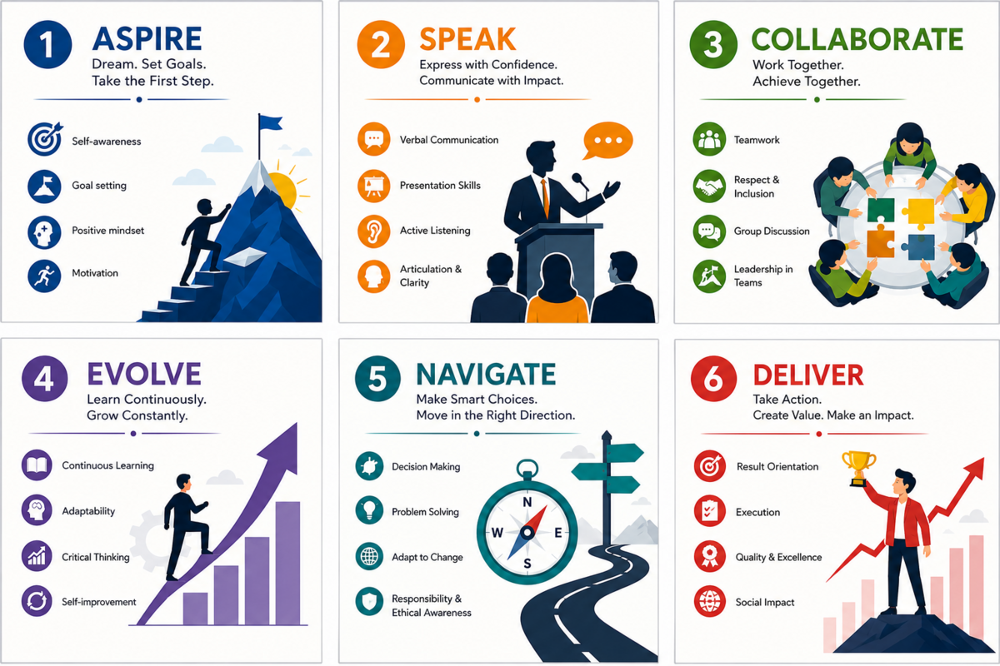
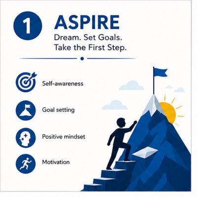
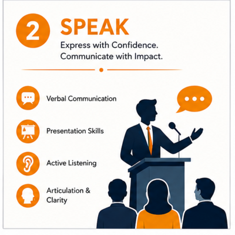
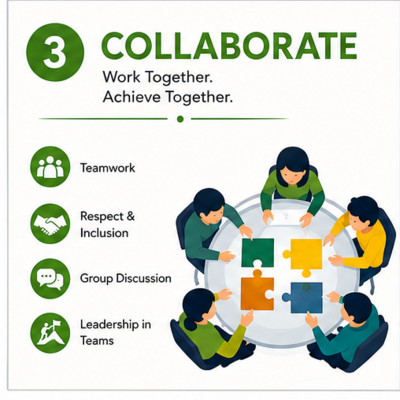
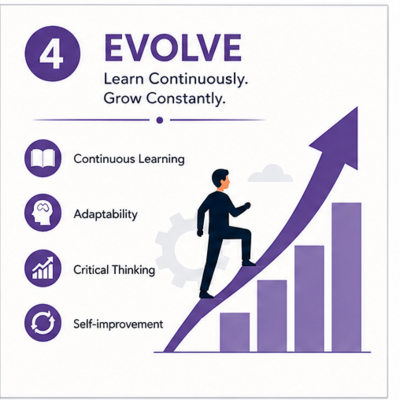
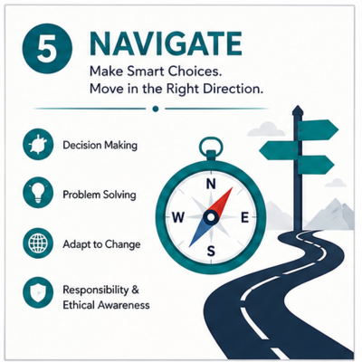
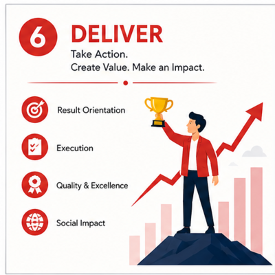

ASCEND
A Continuous Professional Readiness, Soft-Skills and Social Responsibility Programme — turning familiar activities into a measurable, semester-wise development system.
1Executive Summary
ASCEND concentrates existing soft-skill activities into a consistent, formally recognised programme — combining practice, assessment, feedback and community application, without touching academic CGPA during the pilot stage.
and structured one-to-one interviews.
Faculty and student-to-student practice sessions.
Leadership and workplace scenario training.
Expert participation and employee volunteering.
Student-led activities under faculty supervision.
No internship or employment guarantee involved.
2Need for the Programme
The gap isn't absence — it's limited frequency, late-stage delivery, inconsistent evaluation and insufficient individual feedback.
3Objectives
4The ASCEND Framework
A six-part progression from aspiration to responsible delivery. Click each stage to explore it.

Students set goals, communicate, work with others, improve continuously, make responsible decisions and deliver meaningful results.

5. ASPIRE
Build self-awareness, motivation, goal setting and a positive mindset.

6. SPEAK
Develop verbal communication, active listening, clarity and presentation.

7. COLLABORATE
Practise teamwork, inclusion, group discussion and shared leadership.

8. EVOLVE
Strengthen continuous learning, adaptability, reflection and critical thinking.

9. NAVIGATE
Improve decision-making, problem-solving, ethics and response to change.

10. DELIVER
Turn plans into quality outcomes with accountability and social impact.
11Core Activities
| Activity | Purpose |
|---|---|
| Group Discussion | Assesses clarity, listening, teamwork, reasoning and respectful participation. |
| Professional Interview | An expert, alumnus or experienced professional conducts a realistic one-to-one interview and gives feedback. |
| Faculty Mock Interview | Uses a standard question bank and rubric when external experts are unavailable. |
| Student-to-Student Interview | Students alternate roles; peer comments are developmental and faculty-verified. |
| Presentation / Self-Intro | Builds structured expression, confidence and audience awareness. |
| Workplace Scenario | Tests judgement in conflict, delay, teamwork, customer or ethical situations. |
| Leadership Task | Observes planning, delegation, inclusion, responsibility and completion. |
| Community Activity | Applies communication and teamwork to a supervised social need. |
12Assessment and Rating
The ASCEND rating remains separate from academic CGPA during the pilot. Lower ratings indicate support needs, not punishment.
13Corporate Social Responsibility Connection
ASCEND supports CSR through knowledge-sharing, employee volunteering, ethical awareness, inclusive education and student-led community service — with no funding, internship or recruitment commitment required.
Corporate participation
- Conduct interviews and provide constructive feedback.
- Volunteer as mentors, evaluators or guest facilitators.
- Share workplace expectations on communication, ethics, inclusion and teamwork.
- Review rubrics, interview questions and realistic workplace scenarios.
Student social-responsibility activities
- Digital literacy or cyber-safety awareness.
- Career and communication guidance for school students.
- Support for senior citizens using digital services.
- Environmental, waste-segregation or road-safety awareness.
- Accessible or regional-language educational materials.
14International Comparison
Global models show communication, collaboration and self-management work best when continuous, applied and assessed — not one-time placement training.
India
Life-skills, communication and employability frameworks already exist.
Lesson: improve continuity, practical assessment and recognition.
Finland
Transversal competencies are integrated across subjects.
Lesson: embed skills across classroom, projects and activities.
Singapore
21st-century competencies are developed institutionally.
Lesson: use coordinated college-wide ownership.
Australia
Personal and social capabilities progress across learning.
Lesson: assess broad abilities, not English fluency alone.
United States (Higher Ed)
Career-readiness frameworks align learning with workplace competencies.
Lesson: use industry-informed criteria and feedback.
15Pilot Implementation
1. Planning
Form the committee, approve rubric, schedule and communication.
2. Baseline
Assess introduction, discussion, interview, teamwork and confidence.
3. Practice
Conduct repeated peer, faculty and professional-led sessions.
4. Application
Complete one supervised community-oriented activity.
5. Final Assessment
Repeat comparable activities and measure improvement.
6. Review
Issue ratings, identify support needs and revise the next cycle.
Suggested year-wise concentration
Confidence, listening, self-introduction and basic teamwork.
Group discussion, presentation, leadership and problem-solving.
Professional interview, workplace scenarios, ethics and final rating.
16Roles and Safeguards
| Stakeholder | Responsibility |
|---|---|
| Management | Approve the pilot and ensure institutional coordination. |
| ASCEND Committee | Plan activities, maintain rubrics and review outcomes. |
| Faculty | Facilitate, assess, provide feedback and ensure inclusion. |
| Industry / Alumni | Offer professional guidance without recruitment promises. |
| Students | Participate, reflect, improve and complete the social activity. |
17Expected Outcomes
For Students
- Clearer communication and confidence
- Better teamwork and leadership
- Improved interview readiness
- Greater ethical and social awareness
For the College
- Consistent soft-skill development
- Stronger professional interaction
- Measurable progress records
- Inclusive support and community engagement
For Organisations
- Meaningful employee volunteering
- Contribution to youth development
- Better understanding of emerging talent
- Knowledge-based social contribution
18Success Indicators
- Improvement between baseline and final scores.
- Quality of student feedback and reassessment outcomes.
- Participation across departments and student backgrounds.
- Number and quality of professional guidance sessions.
- Usefulness and reach of supervised community activities.
19Conclusion
ASCEND does not claim soft-skill activities are new. It gives them the concentration, continuity, assessment and recognition normally reserved for academic learning — developing graduates who can communicate, collaborate, adapt, decide responsibly and deliver meaningful outcomes.
"ASCEND turns familiar soft-skill activities into a continuous, measurable and socially responsible student-development system."